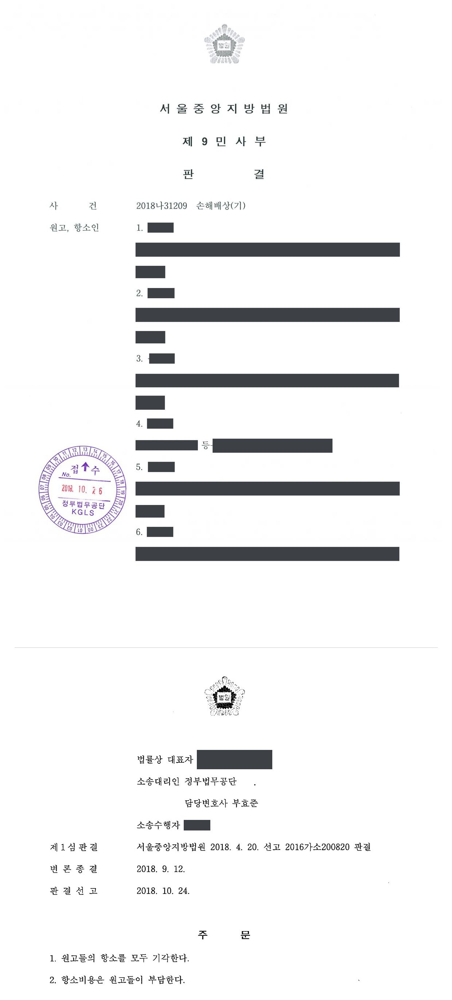

탈북민 투자사기 피해 관련 국가배상 청구소송 (1·2심)
서울중앙지방법원 2016가소200820 · 서울중앙지방법원 2018나31209 · 담당변호사 부효준
사건의 요지
북한이탈주민들이 경찰서가 주최한 안보교육에 강사로 초빙된 사람에게 투자사기 피해를 입었다며 경찰 공무원이 범행을 용이하게 하였다는 이유로 국가배상(각 1원의 위자료)을 구한 사건으로, 경찰이 그 사람을 강사로 초빙하였는지와 1원 청구가 일부청구에 해당하는지가 다투어졌습니다. 1심은 청구를 모두 기각하였고 항소심도 항소를 기각하였습니다.
사건의 주요 내용
원고들은 북한이탈주민으로, 북한이탈주민 출신의 한 사업가가 '자신의 회사에 투자하면 원금을 보장하고 연 18%의 이자를 지급하겠다'고 속여 2012년 12월부터 2014년 3월까지 북한이탈주민들로부터 합계 약 154억 원을 투자금 명목으로 받아 편취한 사건의 피해자들입니다. 그 사업가는 사기와 유사수신행위의 규제에 관한 법률 위반으로 2016년 징역 7년이 확정되었습니다.
원고들은 2012년 6월 관할 경찰서가 북한이탈주민을 대상으로 개최한 신변안전·안보교육에 그 사업가가 강사로 초빙되어 강연하면서 투자를 유도하였고, 경찰서 소속 공무원들이 그의 범법행위를 알면서도 관공서 행사의 강사로 초빙하여 사기 범행을 용이하게 하였다고 주장하며, 국가를 상대로 각 1원의 위자료를 구하는 소를 제기하였습니다. 부효준 변호사는 피고 대한민국을 대리하였습니다. 제1심은 2018년 4월 원고 36명의 청구를 모두 기각하였고, 그중 13명이 항소하였으나 항소심도 2018년 10월 항소를 모두 기각하였습니다.
쟁점
- 위자료를 각 1원으로 정하여 청구한 것이 소액사건심판법 제5조의2가 금지하는 일부청구에 해당하여 각하되어야 하는지
- 경찰서가 주최한 안보교육에 사기 범행을 저지른 사람이 강사로 초빙되었다는 원고들의 주장이 증명되었는지, 경찰 공무원의 행위가 국가배상책임을 발생시키는 불법행위에 해당하는지
원고의 주장
- 그 사업가는 2012년 6월 경찰서가 주최한 북한이탈주민 안보교육에 강사로 초빙되어 강연하면서 원고들에게 투자를 유도하였고, 이로써 원고들은 투자금 상당의 손해를 입었다고 주장하였습니다.
- 경찰서 소속 공무원들은 그가 유사수신행위 등 범법행위를 저지르고 있음을 잘 알면서도 관공서 행사의 강사로 초빙하여 사기 범행을 용이하게 하는 직무유기를 하였으므로, 국가는 국가배상법에 따라 위자료를 지급할 의무가 있다고 주장하였습니다.
부효준 변호사의 주장
- 원고들의 청구는 소액사건심판법의 적용을 받을 목적으로 청구를 분할한 일부청구이므로 같은 법 제5조의2에 따라 각하되어야 한다고 본안전항변을 하였습니다.
- 경찰서 소속 공무원들은 북한이탈주민의 국내 정착과 신변안전을 위한 교육을 진행하였을 뿐 그 사업가의 사기 범행과는 아무런 관련이 없다고 주장하였습니다.
- 원고들이 주장하는 불법행위일인 2012년 6월부터 3년이 지난 뒤에 소가 제기되었으므로 소멸시효가 완성되었다고 항변하였습니다.
법원의 판단
제1심은 그 사업가가 경찰서가 주최한 안보교육장에서 북한이탈주민들에게 자신의 회사에 투자하면 연 18%의 이자를 주겠다고 말한 사실과 유사수신행위로 약식명령을 받은 사실은 인정하면서도, 강연의 목적은 투자 권유가 아니라 탈북과 사회 정착 과정을 설명하여 정착에 도움을 주려는 것이었으므로, 교육장에 경찰관이 있었고 경찰서가 교육을 주최하였다는 사정만으로 경찰관이 유사수신 범행에 가공하였다고 볼 수 없다고 판단하였습니다.
항소심은 일부청구 항변에 대하여, 원고들이 위자료 청구의 액수를 각 1원으로 정하여 청구한 것은 청구를 분할한 일부청구로 볼 수 없다고 하여 받아들이지 않았습니다. 그러나 본안에서는 경찰서가 2012년 6월 북한이탈주민 신변안전·안보교육을 실시하면서 다른 두 사람을 초빙강사로 초빙하여 강사료를 지급한 사실이 인정되는 반면, 원고들이 제출한 서증과 제1심 증인의 증언만으로는 경찰서 소속 공무원들이 그 사업가를 강사로 초빙하여 사기 범행을 용이하게 하였다는 주장을 인정하기에 부족하다고 보았습니다. 이에 따라 공무원의 불법행위를 전제로 하는 원고들의 주장은 소멸시효 등 나머지 점을 살필 필요 없이 이유 없다고 하여 항소를 모두 기각하였습니다.
소액사건심판법 제5조의2 제1항은 "금전 기타 대체물이나 유가증권의 일정한 수량의 지급을 목적으로 하는 청구에 있어서 채권자는 소액사건심판법의 적용을 받을 목적으로 청구를 분할하여 그 일부만을 청구할 수 없다."라고, 제2항은 "제1항의 규정에 위반한 소는 판결로 이를 각하하여야 한다."라고 각 규정하고 있다.
살피건대, 원고들의 이 사건 청구는 위자료 청구로 그 액수를 각 1원으로 정하여 청구하고 있으므로(2017. 8. 4.자 보정서의 기재 및 제1심 법원의 제4차 변론기일에 한 원고들 소송대리인 진술 참조), 일부청구라고 볼 수 없다.
서울중앙지방법원 2018나31209 판결 이유 '2. 나. (1) 소액사건심판법 제5조의2 위반 여부'
위 인정사실에 비추어 볼 때 갑 제1, 2호증의 각 기재, 제1심 증인의 증언만으로는 피고 산하 경찰서 소속 공무원들이 소외인을 안보교육 강사로 초빙하여 주어 소외인으로 하여금 원고들을 비롯한 탈북자들을 상대로 투자를 유도하는 사기범행을 용이하게 저지를 수 있도록 도와주었다는 원고들 주장을 인정하기에 부족하고, 달리 이를 인정할 만한 증거가 없다.
따라서 피고 산하 경찰서 소속 공무원들의 불법행위가 있었음을 전제로 하는 원고들의 주장은 나머지의 점에 관하여 더 나아가 살펴 볼 필요 없이 이유 없어 받아들이지 아니한다.
서울중앙지방법원 2018나31209 판결 이유 '2. 나. (2) 국가배상청구권의 성립 여부'
그러나 소외인의 강연목적이 사업에 투자를 하라는 것이 아니었고, 탈북과정과 사회정착과정을 설명하여 탈북자들의 정착에 도움을 주려는 것이었던 사실이었던 점으로 보아, 위 안보교육장에 경찰관이 있었고, 경찰서에서 위 안보교육을 주최하였다고 하여 경찰관이 소외인의 유사수신 범죄행위에 가공하였다고 인정할 수는 없다.
서울중앙지방법원 2016가소200820 판결 이유
※ 판결 이유 가운데 이 사건의 판단 기준이 된 부분을 그대로 옮긴 것으로, 당사자 이름 등은 가렸습니다.
이 사건이 보여 주는 것
공무원이 주최한 행사에서 제3자가 범행의 계기를 얻었다는 사정만으로 국가배상책임이 성립하지는 않으며, 공무원이 그 범행을 알면서 도왔다거나 범행을 용이하게 하는 직무상 의무 위반이 있었다는 점을 원고가 구체적으로 증명하여야 합니다. 이 사건에서는 행사의 목적과 실제 초빙된 강사, 강사료 지급 내역 등 피고 측이 제출한 객관적 자료가 원고들의 주장을 배척하는 근거가 되었습니다.
또 책임의 존부를 먼저 확인받기 위하여 위자료를 각 1원으로 청구하는 방식에 대하여 법원은 소액사건심판법 제5조의2의 일부청구에 해당하지 않는다고 보았으므로, 이러한 청구는 각하되지 않고 본안 판단을 받게 된다는 점도 참고할 만합니다.
판결문 2장


비슷한 처분을 받으셨다면
행정처분은 처분이 있음을 안 날부터 90일 이내에 행정심판이나 취소소송으로 다투어야 하고, 기간이 지나면 돌이킬 수 없는 처분은 집행정지를 서둘러야 합니다. 처분서를 받은 날짜부터 확인해 드립니다.